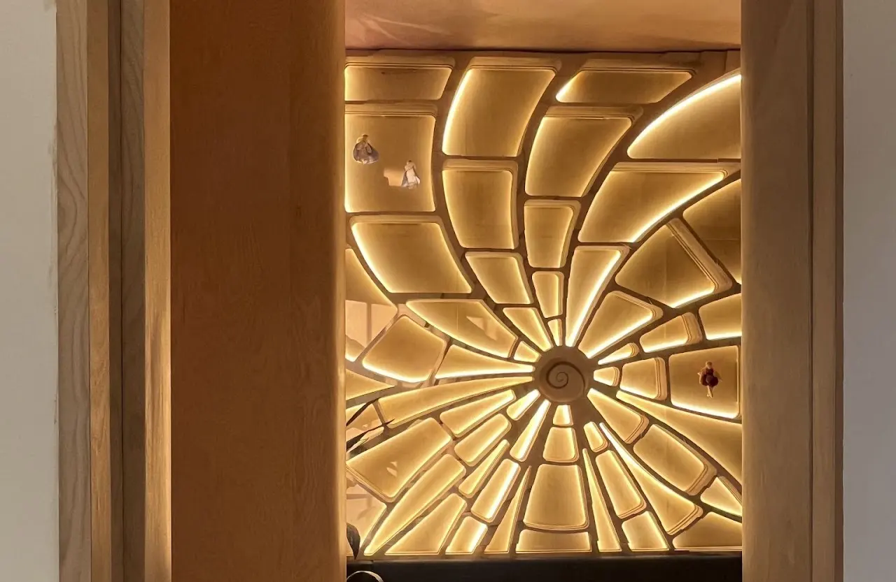
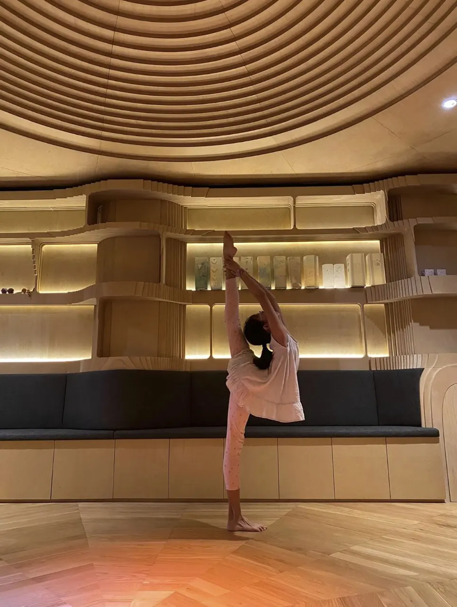
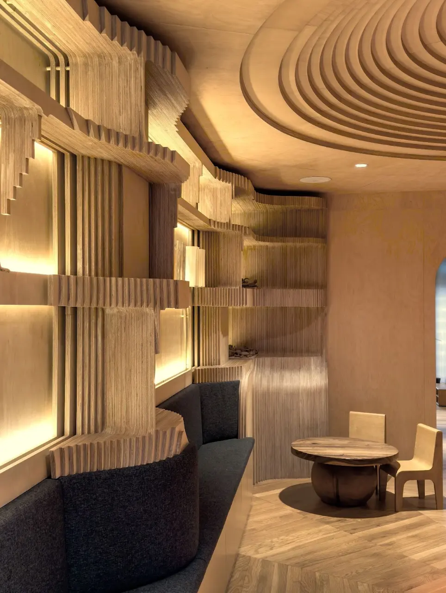
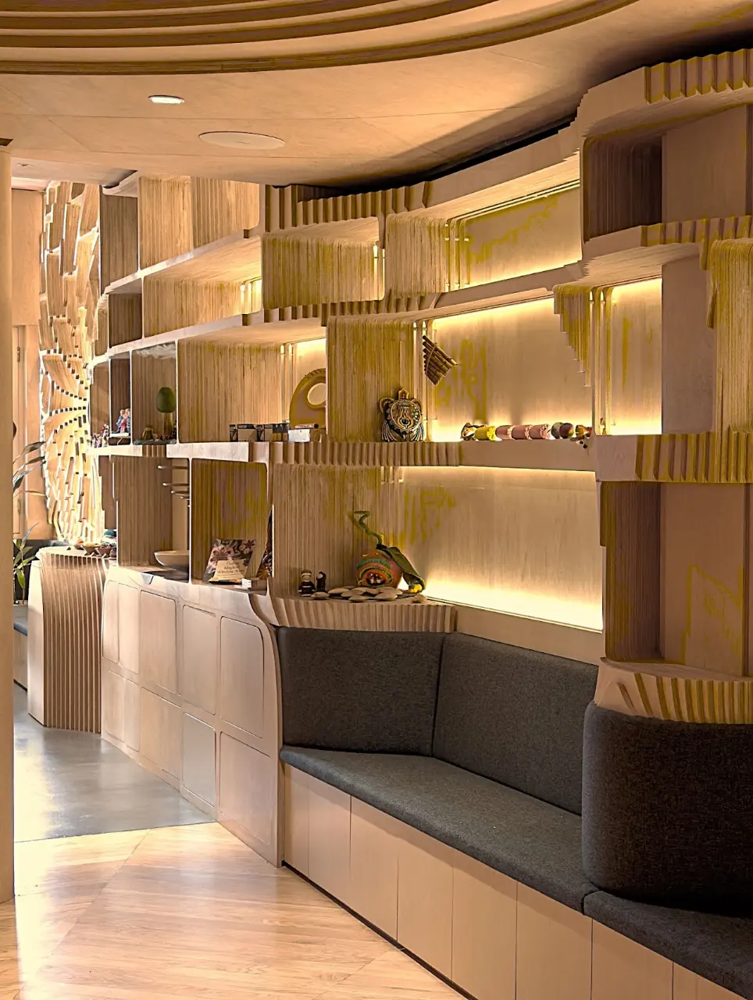

architecture
Wondrous Light Children's Home
Recognised by the International Architecture Awards

- context
- Superstructure
- year
- 2023
- type
- architecture
Wondrous Light Center is more than just a place; it is a beacon of hope, compassion, and holistic well-being, carefully designed to support children, parents, educators, and the broader community. In today’s fast-paced world, where mental health struggles and stress are at an all-time high, the center stands as a sanctuary—a place where peace and serenity guide the journey toward emotional, physical, and mental health for individuals of all ages.
The center's design is equally thoughtful, blending modern elements with natural beauty to cultivate a tranquil environment. From neutral colours to natural materials, every detail has been crafted to promote calm and reduce sensory overload. Spaces for contemplations and healing invite individuals to center themselves, while a dedicated therapy and counseling room provides emotional support, helping families navigate life’s challenges. A kitchen for nutrition classes further complements the center’s holistic approach, offering families the tools to nourish their bodies with wholesome foods.
Built using over 180 individual unique CNC milled plywood pieces stacked together to form a massive shelf spanning the entire 5m long wall.



